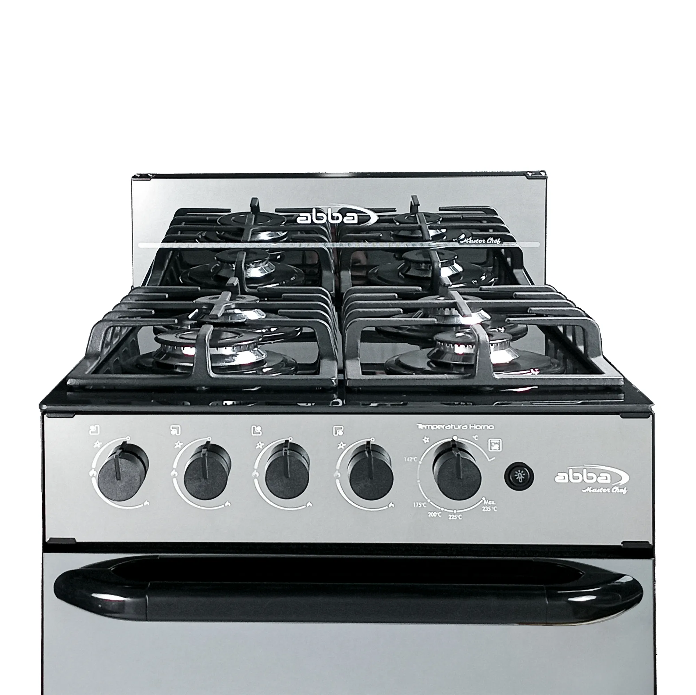
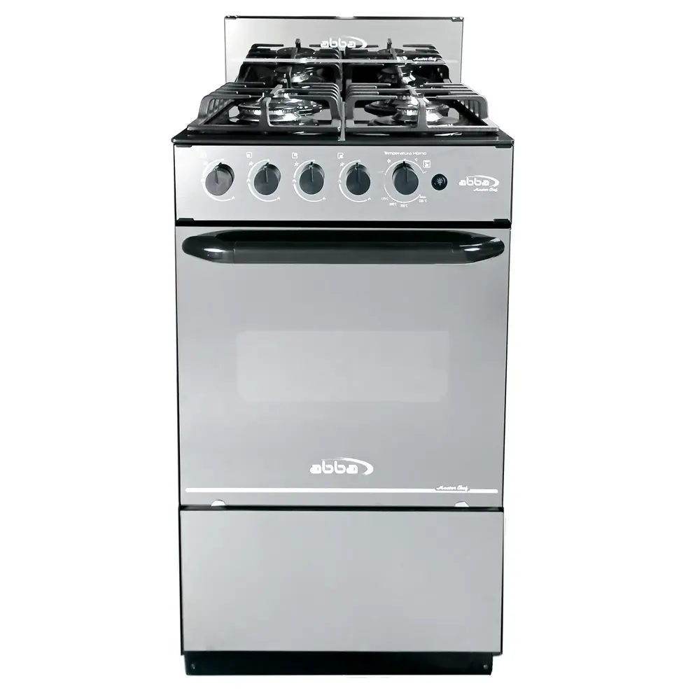

Para que cocinar sea una experiencia diferente, la estufa Abba Master Chef en vidrio templado de 6 puestos, con puertas y mesa en vidrio de seguridad, cuenta con 3 parrillas en hierro fundido y vidrio espejo en la puerta del horno el cual aporta mucha mas visibilidad al interior que permite monitoriar tus platos mientras cocinas, gracias a su bombillo interno en el horno.


Estufa Master chef Abba 71 centímetros Gas Natural o propano, puertas y mesa en vidrio de seguridad, la puerta del horno en vidrio espejo aporta visibilidad al interior que te permite monitorear tus platillos mientras se cocinan. Dos parrillas superiores dobles en hierro fundido fabricadas con materiales resistentes y fáciles de limpiar con 3 quemadores de alto rendimiento rápidos, 1 quemador ultra rápido perfecta para cocinar con rapidez y precisión. Encendido automático (en quemadores y horno), hornos con aislamiento térmico lo cual evita perdidas de calor al interior del horno, generando menor consumo de energía